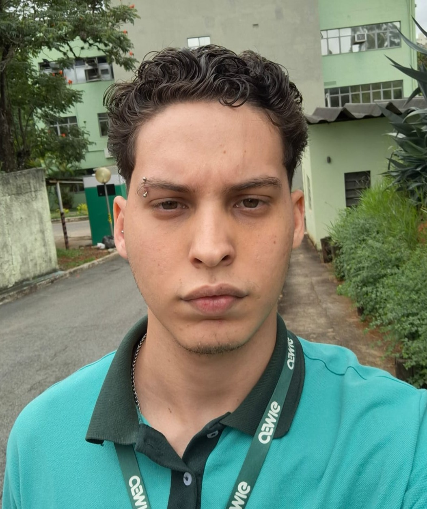

Desejo colaborar em um ambiente de trabalho onde possa colocar em pratica meus conhecimentos, objetivando sempre o beneficio e o crescimento da organização e o crescimento profissional.
• Programação: Assembly e C com foco em
microcontroladores;
• Pacote Office;
• Confecção e soldagem de Placa de Circuito
Impresso (PCI);
• Manutenção de Computadores e equipamentos
eletrônicos;
• Impressora 3D.
• Inglês básico;
• Espanhol básico.
Rua Cristina Maria Assis, 431, Califórnia, Belo Horizonte
Telefone: (31) 989722999
(31) 35867207
rafaeloliveirargto@gmail.com
• 04/2023 - 12/2023: Laboratório de Física - CEFET - MG
Área de atuação: Manutenção e Organização de
Computadores e Equipamentos Laboratoriais de Física
Atividade: Complementação Educacional
Duração: 8 meses
• Apresentação na Mostra de Cursos do CEFET 2023
Curso de Eletrônica
• CEFET - MG
Técnico em Eletrônica, integrado ao ensino médio.
Início em 2020
Conclusão em 2024
•PUC MG
Baicharelado em Engenharia de Software
Início em 2025
Conclusão em 2029
• Categoria AB